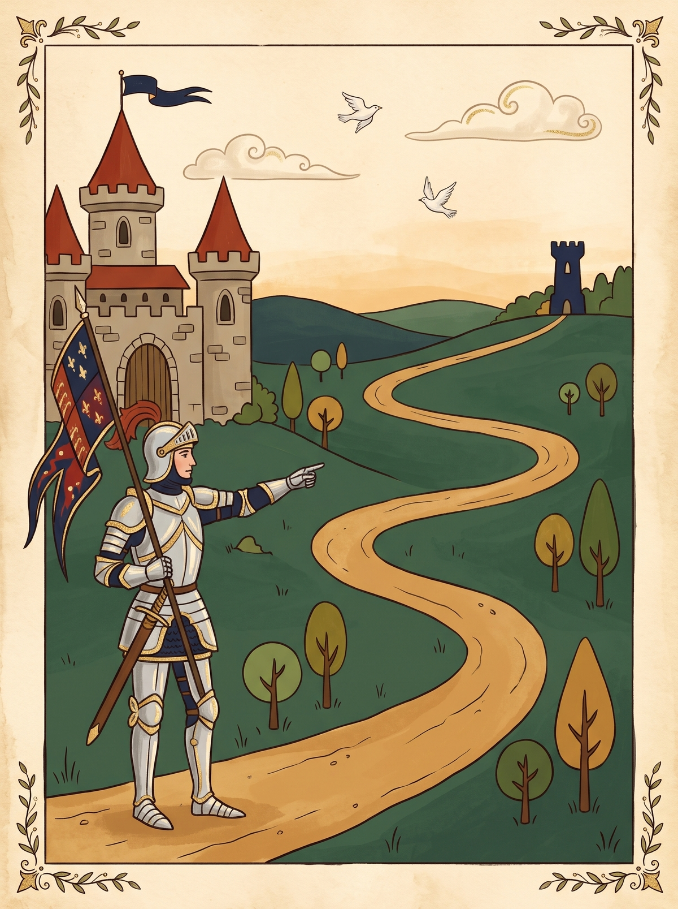
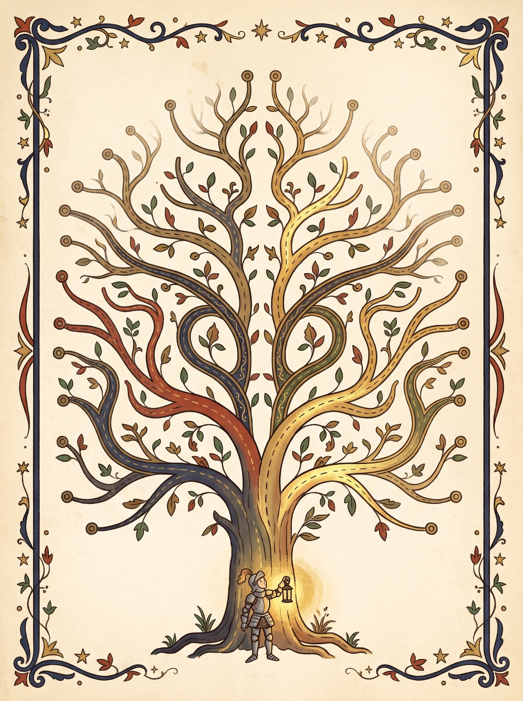
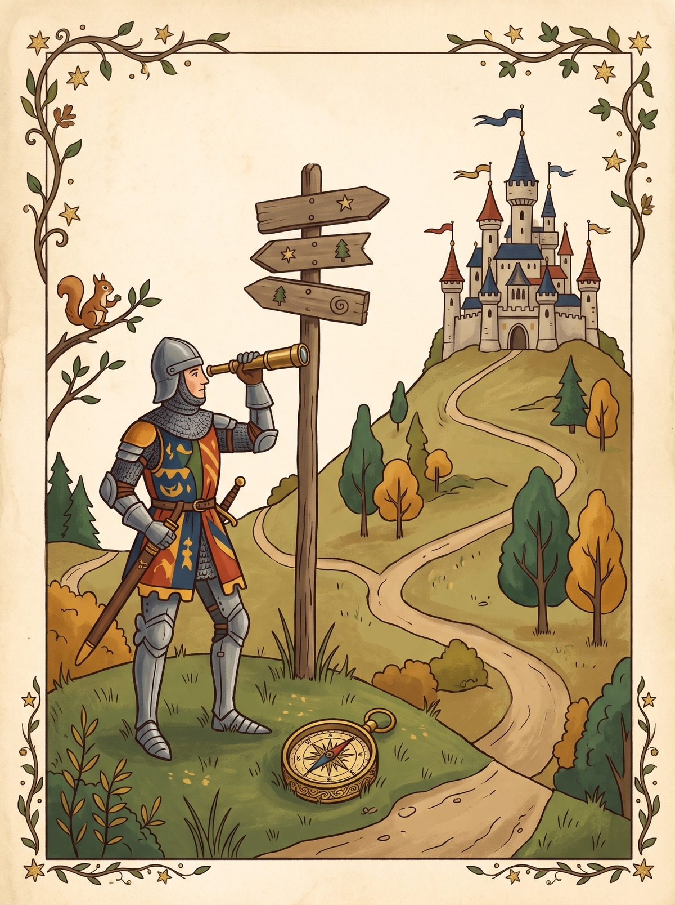
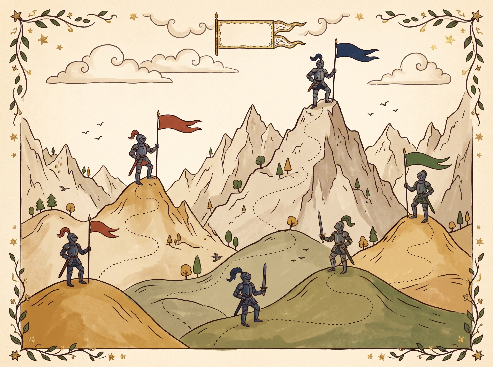
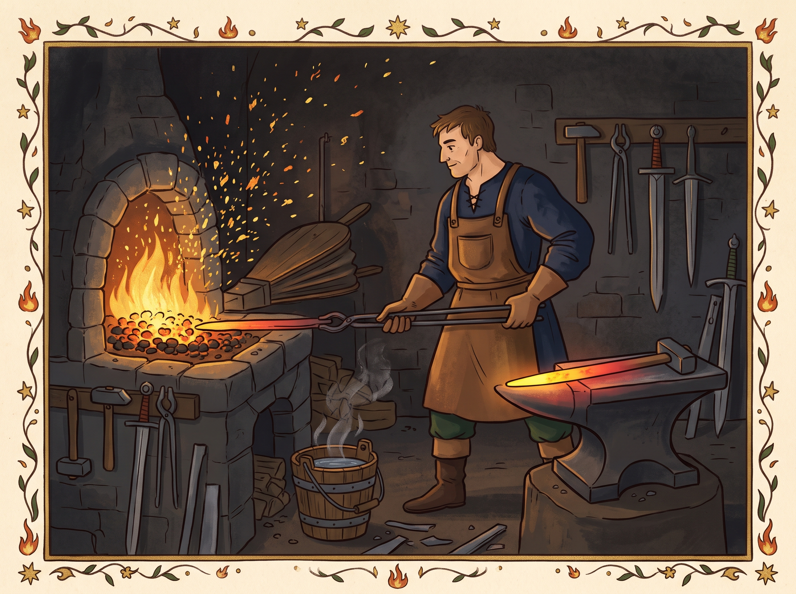

Глава IПоиск пути: BFS, DFS, UCS и A*
Жил-был агент, и нужно было ему добраться из точки START в точку GOAL. Сказка становится задачей, когда есть четыре вещи: пространство состояний, функция-преемник (действия и их стоимость), стартовое состояние и проверка цели. Решение — последовательность действий, которая ведёт из START в GOAL.

Все алгоритмы строят «дерево, что если»: корень — старт, дети — результаты действий. Главный вопрос один: какой узел границы (fringe) раскрыть следующим?
| Алгоритм | Какой узел берёт | Структура |
|---|---|---|
| DFS | самый глубокий | стек (LIFO) |
| BFS | самый мелкий | очередь (FIFO) |
| UCS | с наименьшим g(n) | приоритетная очередь |
| A* | с наименьшим g(n)+h(n) | приоритетная очередь |

g(n) — сколько уже заплачено, h(n) — оценка того, сколько ещё идти, f(n) — оценка всего пути. Пример: узел A (g=4, h=8, f=12) и узел B (g=7, h=2, f=9). A* раскроет B, потому что 9 < 12: он готов платить больше сейчас ради лучшего итога.

BFS находит путь с наименьшим числом шагов, но не с наименьшей стоимостью. Если рёбра имеют разную цену, нужен UCS, а с хорошей эвристикой — A*.
from collections import deque
def bfs(graph, start, goal):
queue = deque([(start, [start])])
while queue:
state, path = queue.popleft() # FIFO
if state == goal:
return path
for nxt in graph[state]:
queue.append((nxt, path + [nxt]))
1. Какая структура данных хранит границу в BFS?
2. Когда BFS и UCS дают разные пути?
3. Как ведёт себя A*, если h(n) = 0 для всех узлов?
Глава IIЛокальный поиск: подъём в гору
Иногда дорога не важна, важен сам замок, в который мы пришли. Тогда ищут не путь, а полную конфигурацию: расстановку ферзей, маршрут коммивояжёра. У конфигурации есть соседи (небольшие изменения) и целевая функция — число, которое мы максимизируем или минимизируем. Хранится лишь текущее состояние, поэтому память почти не нужна.

Hill climbing смотрит на соседей и идёт в лучшего; когда лучших нет, останавливается. Он быстр, но попадает в ловушки: локальный максимум (пик ниже главного), плато (всё одинаково) и хребет.
Ландшафт [1, 4, 7, 5, 3, 6, 9, 8]. Из индекса 0 алгоритм идёт 1 → 4 → 7 и стоит: оба соседа хуже. Но на индексе 6 лежит значение 9, глобальный максимум.

Случайные перезапуски: запускаем hill climbing из разных точек и берём лучший результат. Имитация отжига умеет временно принимать ход хуже: при высокой температуре T это часто, по мере остывания — всё реже.

import random, math
def anneal(values, start, T=10):
current = start
while T > 0.1:
nxt = random_neighbor(current)
dE = values[nxt] - values[current]
if dE > 0 or random.random() < math.exp(dE / T):
current = nxt
T *= 0.95 # остывание
return current
1. Когда hill climbing останавливается?
2. Что позволяет имитации отжига выйти из локального максимума?
3. Hill climbing на [1, 4, 7, 5, 3, 6, 9, 8] со старта в индексе 0 вернёт значение…
Продолжение следует… Далее: вероятность, HMM, решения, ML, MDP.